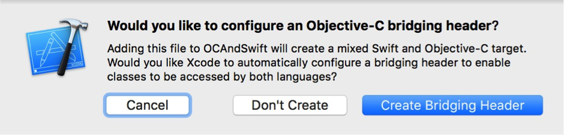

调用代码使应用进入后台
1
[[UIApplication sharedApplication] performSelector:@selector(suspend)];
带中文的URL处理
1
2
3
4
5// http://static.tripbe.com/videofiles/视频/我的自拍视频.mp4
NSString *path =(__bridge_transfer NSString *)CFURLCreateStringByReplacingPercentEscapesUsingEncoding(NULL,
(__bridge CFStringRef)model.mp4_url,
CFSTR(""),
CFStringConvertNSStringEncodingToEncoding(NSUTF8StringEncoding));获取WebView高度
1
2
3
4
5- (void)webViewDidFinishLoad:(UIWebView *)webView {
CGFloat height = [[webView stringByEvaluatingJavaScriptFromString:@"document.body.offsetHeight"] floatValue];
CGRect frame = webView.frame;
webView.frame = CGRectMake(frame.origin.x, frame.origin.y, frame.size.width, height);
}View设置图片
第一种方法 1
2
3UIColor *bgColor = [UIColor colorWithPatternImage: [UIImage imageNamed:@"bgImg.png"];
UIView *myView = [[UIView alloc] initWithFrame:CGRectMake(0, 0, 320, 480)];
[myView setBackGroundColor:bgColor];第二种方法 1
2
3
4UIImage *image = [UIImage imageNamed:@"yourPicName@2x.png"];
yourView.layer.contents = (__bridge id)image.CGImage;
// 设置显示的图片范围
yourView.layer.contentsCenter = CGRectMake(0.25,0.25,0.5,0.5);//四个值在0-1之间，对应的为x，y，width，height。去掉TableView 底部分割线
1
yourTableView.tableFooterView = [UIView new];
更改cell分割线位置
1
2
3
4
5
6
7
8
9
10
11
12
13
14
15
16
17
18
19- (void)viewDidLayoutSubviews {
if ([self.mytableview respondsToSelector:@selector(setSeparatorInset:)]) {
[self.mytableview setSeparatorInset:UIEdgeInsetsMake(0, 0, 0, 0)];
}
if ([self.mytableview respondsToSelector:@selector(setLayoutMargins:)]) {
[self.mytableview setLayoutMargins:UIEdgeInsetsMake(0, 0, 0, 0)];
}
}
- (void)tableView:(UITableView *)tableView willDisplayCell:(UITableViewCell *)cell forRowAtIndexPath:(NSIndexPath *)indexPath
{
if ([cell respondsToSelector:@selector(setSeparatorInset:)]){
[cell setSeparatorInset:UIEdgeInsetsMake(0, 0, 0, 0)];
}
if ([cell respondsToSelector:@selector(setLayoutMargins:)]) {
[cell setLayoutMargins:UIEdgeInsetsMake(0, 0, 0, 0)];
}
}UILabel和UIImageView的交互userInteractionEabled默认为NO。那么如果你把这两个类做为父试图的话，里面的所有东东都不可以点击哦。
搜索条Cancel改标题
1
2
3
4
5
6
7
8
9- (BOOL)searchBarShouldBeginEditing:(UISearchBar *)searchBar
{
searchController.searchBar.showsCancelButton = YES;
UIButton *canceLBtn = [searchController.searchBar valueForKey:@"cancelButton"];
[canceLBtn setTitle:@"取消" forState:UIControlStateNormal];
[canceLBtn setTitleColor:[UIColor colorWithRed:14.0/255.0 green:180.0/255.0 blue:0.0/255.0 alpha:1.00] forState:UIControlStateNormal];
searchBar.showsCancelButton = YES;
return YES;
}TableView回收键盘
1
2yourTableView.keyboardDismissMode = UIScrollViewKeyboardDismissModeOnDrag;
// 另外一个枚举为UIScrollViewKeyboardDismissModeInteractive，表示在键盘内部滑动，键盘逐渐下去。NSTimer
NSTimer计算的时间并不精确
NSTimer需要添加到runLoop运行才会执行，但是这个runLoop的线程必须是已经开启。
NSTimer会对它的tagert进行retain，我们必须对其重复性的使用intvailte停止。target如果是self（指UIViewController），那么VC的retainCount+1，如果你不释放NSTimer，那么你的VC就不会dealloc了，内存泄漏了。十六进制取颜
1
2
3
4
5
6
7
8
9
10
11
12
13
14
15
16
17
18
19
20
21
22
23
24
25
26
27
28
29
30
31
32
33
34
35
36
37
38
39
40
41+ (UIColor *)colorWithHexString:(NSString *)color
{
NSString *cString = [[color stringByTrimmingCharactersInSet:[NSCharacterSet whitespaceAndNewlineCharacterSet]] uppercaseString];
// String should be 6 or 8 characters
if ([cString length] < 6) {
return [UIColor clearColor];
}
// strip 0X if it appears
if ([cString hasPrefix:@"0X"])
cString = [cString substringFromIndex:2];
if ([cString hasPrefix:@"#"])
cString = [cString substringFromIndex:1];
if ([cString length] != 6)
return [UIColor clearColor];
// Separate into r, g, b substrings
NSRange range;
range.location = 0;
range.length = 2;
//r
NSString *rString = [cString substringWithRange:range];
//g
range.location = 2;
NSString *gString = [cString substringWithRange:range];
//b
range.location = 4;
NSString *bString = [cString substringWithRange:range];
// Scan values
unsigned int r, g, b;
[[NSScanner scannerWithString:rString] scanHexInt:&r];
[[NSScanner scannerWithString:gString] scanHexInt:&g];
[[NSScanner scannerWithString:bString] scanHexInt:&b];
return [UIColor colorWithRed:((float) r / 255.0f) green:((float) g / 255.0f) blue:((float) b / 255.0f) alpha:1.0f];
}取今天是星期几
1
2
3
4
5
6
7
8
9
10
11
12
13
14
15
16
17
18
19
20
21
22
23
24
25
26
27
28
29
30
31
32
33
34
35
36
37
38
39
40
41
42
43
44
45
46
47
48
49
50
51
52
53
54
55
56
57
58+ (NSString *) getweekDayStringWithDate:(NSDate *) date
{
NSCalendar * calendar = [[NSCalendar alloc] initWithCalendarIdentifier:NSGregorianCalendar]; // 指定日历的算法
NSDateComponents *comps = [calendar components:NSWeekdayCalendarUnit fromDate:date];
// 1 是周日，2是周一 3.以此类推
NSNumber * weekNumber = @([comps weekday]);
NSInteger weekInt = [weekNumber integerValue];
NSString *weekDayString = @"(周一)";
switch (weekInt) {
case 1:
{
weekDayString = @"(周日)";
}
break;
case 2:
{
weekDayString = @"(周一)";
}
break;
case 3:
{
weekDayString = @"(周二)";
}
break;
case 4:
{
weekDayString = @"(周三)";
}
break;
case 5:
{
weekDayString = @"(周四)";
}
break;
case 6:
{
weekDayString = @"(周五)";
}
break;
case 7:
{
weekDayString = @"(周六)";
}
break;
default:
break;
}
return weekDayString;
}UIView的部分圆角问题
1
2
3
4
5
6
7
8
9
10
11
12
13
14
15
16UIView *view2 = [[UIView alloc] initWithFrame:CGRectMake(120, 10, 80, 80)];
view2.backgroundColor = [UIColor redColor];
[self.view addSubview:view2];
UIBezierPath *maskPath = [UIBezierPath bezierPathWithRoundedRect:view2.bounds byRoundingCorners:UIRectCornerBottomLeft | UIRectCornerBottomRight cornerRadii:CGSizeMake(10, 10)];
CAShapeLayer *maskLayer = [[CAShapeLayer alloc] init];
maskLayer.frame = view2.bounds;
maskLayer.path = maskPath.CGPath;
view2.layer.mask = maskLayer;
//其中，byRoundingCorners:UIRectCornerBottomLeft |UIRectCornerBottomRight
//指定了需要成为圆角的角。该参数是UIRectCorner类型的，可选的值有：
//* UIRectCornerTopLeft
//* UIRectCornerTopRight
//* UIRectCornerBottomLeft
//* UIRectCornerBottomRight
//* UIRectCornerAllCorners滑动时隐藏navigationBar
1
self.navigationController.hidesBarsOnSwipe = YES;
iOS画虚线
1
2
3
4
5
6
7
8
9
10
11
12
CGContextRef context =UIGraphicsGetCurrentContext();
CGContextBeginPath(context);
CGContextSetLineWidth(context, 2.0);
CGContextSetStrokeColorWithColor(context, [UIColor whiteColor].CGColor);
CGFloat lengths[] = {10,10};
CGContextSetLineDash(context, 0, lengths,2);
CGContextMoveToPoint(context, 10.0, 20.0);
CGContextAddLineToPoint(context, 310.0,20.0);
CGContextStrokePath(context);
CGContextClosePath(context);自动布局多行UILabel问题
1
2// 需要设置其preferredMaxLayoutWidth属性才能正常显示多行内容。另外如果出现显示不全文本，可以在计算的结果基础上＋0.5。
CGFloat h = [model.message boundingRectWithSize:CGSizeMake([UIScreen mainScreen].bounds.size.width - kGAP-kAvatar_Size - 2*kGAP, CGFLOAT_MAX) options:NSStringDrawingUsesLineFragmentOrigin attributes:attributes context:nil].size.height+0.5;禁止运行时自动锁屏
1
[[UIApplication sharedApplication] setIdleTimerDisabled:YES];
强制App直接退出
1
2
3
4
5
6
7
8
9- (void)exitApplication {
AppDelegate *app = [UIApplication sharedApplication].delegate;
UIWindow *window = app.window;
[UIView animateWithDuration:1.0f animations:^{
window.alpha = 0;
} completion:^(BOOL finished) {
exit(0);
}];
}Label行间距
1
2
3
4
5
6
7
8
9
10NSMutableAttributedString *attributedString =
[[NSMutableAttributedString alloc] initWithString:self.contentLabel.text];
NSMutableParagraphStyle *paragraphStyle = [[NSMutableParagraphStyle alloc] init];
[paragraphStyle setLineSpacing:3];
// 调整行间距
[attributedString addAttribute:NSParagraphStyleAttributeName
value:paragraphStyle
range:NSMakeRange(0, [self.contentLabel.text length])];
self.contentLabel.attributedText = attributedString;MRC和ARC混编设置方式
在XCode中targets的build phases选项下Compile Sources下选择->不需要arc编译的文件，双击输入 -fno-objc-arc 即可
MRC工程中也可以使用ARC的类，方法如下：
在XCode中targets的build phases选项下Compile Sources下选择要使用arc编译的文件，双击输入 -fobjc-arc 即可cell对勾颜色修改
1
yourTableView.tintColor = [UIColor redColor];
同时按两个按钮问题
1
[button setExclusiveTouch:YES];
修改占位符颜色和大小
1
2
3textField.placeholder = @"请输入用户名";
[textField setValue:[UIColor redColor] forKeyPath:@"_placeholderLabel.textColor"];
[textField setValue:[UIFont boldSystemFontOfSize:16] forKeyPath:@"_placeholderLabel.font"];禁止复制粘贴
1
2
3
4
5
6
7- (BOOL)canPerformAction:(SEL)action withSender:(id)sender
{
if ([UIMenuController sharedMenuController]) {
[UIMenuController sharedMenuController].menuVisible = NO;
}
return NO;
}进入App在AppStore页面
1
2
3
4
5
6
7// 先用iTunes Link Maker找到软件在访问地址，格式为itms-apps://ax.itunes.apple.com/…，然后复制链接！
NSURL *url = [NSURL URLWithString:ITUNESLINK];
if([[UIApplication sharedApplication] canOpenURL:url]){
[[UIApplication sharedApplication] openURL:url];
}
// 如果把上述地址中itms-apps改为http就可以在浏览器中打开了。可以把这个地址放在自己的网站里，链接到app store。 iTunes Link Maker地址：http://itunes.apple.com/linkmaker隐藏系统tabbar
1
2
3
4
5
6
7
8
9
10
11
12
13
14
15// 1、单个处理
YourViewController *yourVC = [YourViewController new];
yourVC.hidesBottomBarWhenPushed = YES;
[self.navigationController pushViewController:yourVC animated:YES];
// 2.统一在基类里面处理,新建一个类BaseNavigationController继承UINavigationController，然后重写
-(void)pushViewController:(UIViewController *)viewController animated:(BOOL)animated这个方法。所有的push事件都走此方法。
@interface BaseNavigationController : UINavigationController
@end
-(void)pushViewController:(UIViewController *)viewController animated:(BOOL)animated{
[super pushViewController:viewController animated:animated];
if (self.viewControllers.count>1) {
viewController.hidesBottomBarWhenPushed = YES;
}
}取消系统的返回手势
1
self.navigationController.interactivePopGestureRecognizer.enabled = NO;
改WebView字体/颜色
1
2
3
4
5
6
7
8// UIWebView设置字体大小，颜色，字体： UIWebView无法通过自身的属性设置字体的一些属性，只能通过html代码进行设置 在webView加载完毕后：
- (void)webViewDidFinishLoad:(UIWebView *)webView {
NSString *str = @"document.getElementsByTagName('body')[0].style.webkitTextSizeAdjust= '60%'";
[webView stringByEvaluatingJavaScriptFromString:str];
}
NSString *jsString = [[NSString alloc] initWithFormat:@"document.body.style.fontSize=%f;document.body.style.color=%@",fontSize,fontColor];
[webView stringByEvaluatingJavaScriptFromString:jsString];获取系统版本号
1
2
3
4
5
6// 第一种
NSString * filePath = [[NSBundle mainBundle] pathForResource:@"Info" ofType:@"plist"];
NSDictionary * dic = [NSDictionary dictionaryWithContentsOfFile:filePath];
NSString * version = dic[@"CFBundleShortVersionString"];
// 第二种
NSString * ver = [NSBundle mainBundle].infoDictionary[@"CFBundleShortVersionString"];CocoaPods无法显示类名
- 设置pch文件
1、pch原理：pch里面的内容被项目中的所有文件共有
2、存放一些公用的宏、头文件
3、pch需要提前编译
$(SRCROOT)/Base/BasePrefixHeader.pch 在oc项目中使用Swift
上面的修改了一个配置项，有一个Product Module Name在后面会使用。
在工程里面点击File/New/File…,选择iOS/Source/Cocoa Touch Class,按照如下填写创建一个新的文件：
上图中的Subclass of一定要设置为NSObject或其子类，否则OC工程将不会找到该类。
点击确认后会选择保存路径，点击Create，出现如下界面：

这个界面是询问是否创建桥接的头文件，这个文件在Swift调用OC代码的时候比较管用，但是在OC中调用Swift的时候我发现没有什么卵用。
选择Don’t Create按钮。
在Test.swift中添加如下的代码(解释都在注释里面了)：
我们在我们想要调用Swift类的方法里面引入头文件：”Product Module Name-Swift.h”,其中Product Module Name替换成在上面配置项中显示的内容，例如：
// 引入Swift头文件 #import “OCAndSwift-Swift.h”解决横屏状态栏默认隐藏的问题
1
2
3
4
5
6
7
8
9
10
11
12
13
14
15
16// 在Info.plist文件添加View controller-based status bar appearance 设置为YES；
// 设置状态栏样式
- (UIStatusBarStyle)preferredStatusBarStyle {
// 白色
return UIStatusBarStyleLightContent;
}
// 在需要显示状态的控制器（横屏时）敲入以下代码：
// 设置是否隐藏
- (BOOL)prefersStatusBarHidden {
// [super prefersStatusBarHidden];
return NO;
}
//设置隐藏动画
- (UIStatusBarAnimation)preferredStatusBarUpdateAnimation {
return UIStatusBarAnimationNone;
}iOS横竖屏适配
1
2
3
4
5
6
7
8
9
10
11
12
13
14
15
16
17
18-(void)viewWillTransitionToSize:(CGSize)size withTransitionCoordinator:(id<UIViewControllerTransitionCoordinator>)coordinator
{
[super viewWillTransitionToSize:size withTransitionCoordinator:coordinator];
[coordinator animateAlongsideTransition:^(id<UIViewControllerTransitionCoordinatorContext> context) {
//计算旋转之后的宽度并赋值
CGSize screen = [UIScreen mainScreen].bounds.size;
//界面处理逻辑
self.lineChartView.frame = CGRectMake(0, 30, screen.width, 200.0);
//动画播放完成之后
if(screen.width > screen.height){
NSLog(@"横屏");
}else{
NSLog(@"竖屏");
}
} completion:^(id<UIViewControllerTransitionCoordinatorContext> context) {
NSLog(@"动画播放完之后处理");
}];
}
转载请注明出处
文章有问题请指出